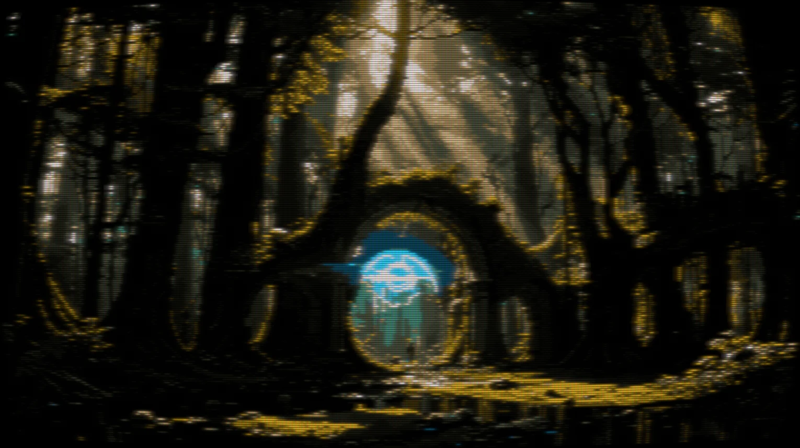

The hall of fame
You can find all of my favourite media in here. This page has basically no value, unless you want to find some bangers to watch/read/listen to. In which case you've found the right place.
Also totally try clicking on the images, some of them link to the media..
 TV shows
TV shows Movies
Movies Books
Books Music
Music Games
Games Artists
Artists Podcasts
PodcastsTV shows
The Owl House

A story about a human getting stranded in a magical world. I'm not good with descriptions. It's awesome, go watch it if you haven't already.
My Little Pony: Friendship is Magic

Yes. It's unironically a banger. Just give it a try. Its reputation of a show for little girls is very much not justified, and I can guarantee you will have fun while watching it. You can view it for free on https://heatshine.gay.
BoJack Horseman

Can you imagine feeling sad for a burned out alcoholic who has sabotaged his own life? No? Well, this show will make you.
Tuca and Bertie

A spin off of Bojack. Makes full use of the fact that it's animated, and refuses to acknowledge the existence of the laws of physics. Actually that's not right. It acknowledges them, but mocks them to no end.
Gravity Falls

A certified hood classic. No introduction needed.
Amphibia

Yet another story about a human getting stranded in another world. The series relies on its humor in the first season, whereas seasons 2 and 3 are basically one continuous story.
Wander Over Yonder

Adventures of Silvia and Wander, travelling through the universe, where every planet is approximately 5cm in size or something. If you want to enjoy a fun little show, this one's for you. If anything, you will like Lord Hater, the least competent but one of the funniest villains I've ever encountered.

Regular Show

The most normal Cartoon Network show.
Talespin

Pleanes. Lots of planes. And lots of fun. And also the glorious hand drawn animation style from the 90s.
Hilda

Southpark

I believe it needs no introduction.
Archer


Hazbin Hotel

Ever since I've discovered the pilot episode years ago, I couldn't wait for the release of the full show. And boy did Vivziepop deliver. The spin off series, Helluva Boss (free on youtube) is also worth watching, if you don't mind a plot line resembling Swiss cheese.
Murder Drones

An instant indie classic. While it may not make sense a lot of the times, I enjoy it every time I see it.
Moon Girl and Devil Dinosaur

Beautiful animation, banger of a soundtrack, story that makes sense. Even tho I'm not a fan of superheroes, this is amazing.
The Ghost and Molly McGee
Movies
Zootopia

An all time favourite. Nothing comes close to it.
Pacific Rim

Monsters vs giant robots created by humans to defend themselves
Ruby Gillman: Teenage Kraken

Does not have a high rating on most sites, but I have seen it multiple times, and enjoyed it.
Lego movie

Spiderman Into the Spiderverse

Literally everyone knows and likes this, and for a good reason
Mitchells vs the Machines

Treasure Planet

One of the last 2D Disney movies. A modern adaptation of the Treasure Island.
Kung Fury

Hitler comes back in time and our heroes have to stop him. I love this thing so much. David Sandberg managed to make a movie in the style of 80s with a few dollars, and made it extremely entertaining to watch.
Cloudy with a Chance of Meatballs

Books/Comic books
Fallout: Equestria

Fallout: Equestria - Project Horizons

A long ass book. Literally. Around 2M words. But worth reading, if you have 6 months to spare.
Midnight Library

Describes how we don't have to feel bad for the choices we've made in the past, as we don't know every variable, and the outcome can easily be the same no matter what.
Guardian Blue by Alps_Sarsis

Burrow by CDNCrow

The Punk of Podunk by she_dies_at_the_end

Music
Smash Into Pieces

Deadmau5

Ponies at Dawn

A group of pony DJ releasing collections of bangers. Their music can be found for free, on their bandcamp, if you enter 0€ as the price.
Daft Punk

Is there even anyone who hasn't heard about these guys?
Scandroid

Pure synthwave goodness
Poets of the Fall

Games
Most of these are pretty famous, no need to explain why I like them.
Super Mario Odyssey

Scarlet Hollow

Portal 2

Cult of the Lamb

Bluemaxima Flashpoint

A repository of all flash games
Artists
Olly Moss

The Firewatch artist
Yakovlev-vad
The artwork I used for Fallout Equestria is from him.
Lashman
Incredible pixelart laced with a CRT filter
Podcasts
Tech Over Tea

"This channel was created to give me an opportunity to talk to really interesting people and share those conversations with the world, I hope that you guys end up having as much fun listening to the show as I do creating it."
Recast

This is a podcast hosted by the Slovakian youtuber Duklock.